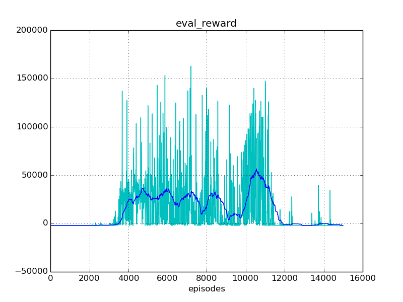
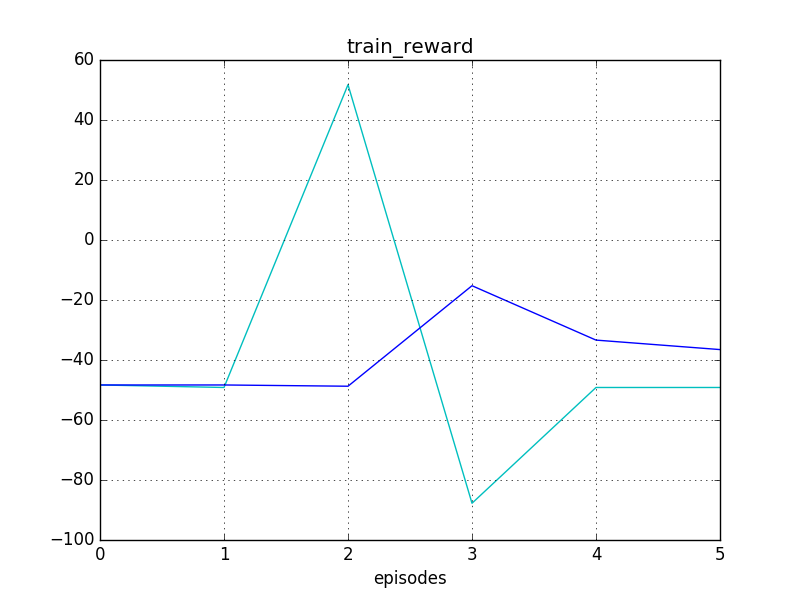
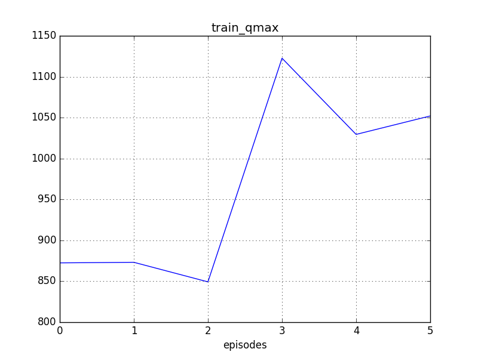

Experiment #009
Reward: 23377
Qmax: 81360
Left: 14:18:00 (44%)
Report time: 2017-02-01 08:56:44
Host name: bernard
Configuration
Experiment:
exp.base_path: ../experiments/
exp.episodes: 15000
exp.id: 009
exp.logger_class: core.logger.Logger
exp.mind_class: tf.mind.TensorflowMind
exp.platform_class: tf.platform.TensorflowPlatform
exp.save_every_episodes: 100
exp.steps: 300
exp.world_class: zoo.scorpion.world.ScorpionWorld
Algorithm:
alg.batch_size: 128
alg.buffer_size: 100000
alg.noise_rate_method: linear_05_00
alg.noise_sigma: 0.1
alg.noise_theta: 0.01
Mind:
mind.evaluate_every_episodes: 10
Environment:
env.assets: ../assets/
env.done_method: done_ball_under_1
env.episode_jpos_method: jpos_init_ball
env.frame_skip: 2
env.id: Zoo:Mujoco:Scorpion-v1
env.init_every_episods: 30
env.reward_method: ball_height_reward
env.step_jpos_method: jpos_do_nothing
env.target_range_xz: [[-0.7, 0.7], [0.5, 1.0]]
env.world.agents: ['scorpion', 'ball']
env.world.scorpion.agents: ['tentacle', 'target']
env.world.scorpion.algorithm:
env.world.scorpion.class: zoo.scorpion.scorpion.ScorpionAgent
env.world.scorpion.inputs: ['ball_x', 'ball_y', 'ball_z', 'ball_vx', 'ball_vy', 'ball_vz']
env.world.scorpion.tentacle.algorithm:
env.world.scorpion.tentacle.inputs: ['target_x', 'target_z']
env.world.scorpion.tentacle.mind_path: ../experiments/003/mind/world.scorpion.tentacle
Reporting:
report.diagram_mean_frame: 50
report.refresh_html_every_secs: 90
report.summary_every_episodes: 30
report.write_every_episodes: 2
Progress
Episodes: 6668
Steps: 2000400
Total time: 25:44:39
spent: 11:26:39 (44%)
left: 14:18:00
Finish: 23:14:44 2017-02-01
Performance: 0.16 per sec
Results
Train reward: +14933.43
Eval reward: +23376.77
Diagrams



Instances
Experiment:
id: 009
work_path: ../experiments/009
platform: TensorflowPlatform
world: ScorpionWorld:
env_id: Zoo:Mujoco:Scorpion-v1
model_path: ../assets/world.xml
total_act_dim: 6
env: ScorpionEnv:
model_path: /home/roman-ml/prj/rmus/zoo/zoo/scorpion/experiments/009/environment/env_model.xml
sensors:
world.scorpion.sensor_head_pos [1]
world.scorpion.sensor_head_vel [1]
world.scorpion.tentacle.sensor_s1_pos [1]
world.scorpion.tentacle.sensor_s1_vel [1]
world.scorpion.tentacle.sensor_s2_pos [1]
world.scorpion.tentacle.sensor_s2_vel [1]
world.scorpion.tentacle.sensor_s3_pos [1]
world.scorpion.tentacle.sensor_s3_vel [1]
world.scorpion.target.sensor_x [1]
world.scorpion.target.sensor_z [1]
world.ball.sensor_x [1]
world.ball.sensor_y [1]
world.ball.sensor_z [1]
world.ball.sensor_vx [1]
world.ball.sensor_vy [1]
world.ball.sensor_vz [1]
world.ball.sensor_accelerometer [3]
actuators:
world.scorpion.actuator_head [-10 +10]
world.scorpion.actuator_target_x [-2 +2]
world.scorpion.actuator_target_z [-1 +2]
world.scorpion.tentacle.actuator_s1 [-2000 +2000]
world.scorpion.tentacle.actuator_s2 [-1500 +1500]
world.scorpion.tentacle.actuator_s3 [-500 +500]
sensors:
no
actuators:
no
observations:
sensor: world.scorpion.sensor_head_pos=[+2.09]
sensor: world.scorpion.sensor_head_vel=[+5.65e-05]
inputs: world.scorpion.inputs_ball_x=[-2.78]
inputs: world.scorpion.inputs_ball_y=[+4.71]
inputs: world.scorpion.inputs_ball_z=[-3.81]
inputs: world.scorpion.inputs_ball_vx=[-3.38]
inputs: world.scorpion.inputs_ball_vy=[+5.76]
inputs: world.scorpion.inputs_ball_vz=[-4.21]
sensor: world.scorpion.tentacle.sensor_s1_pos=[+0.972]
sensor: world.scorpion.tentacle.sensor_s1_vel=[+0.359]
sensor: world.scorpion.tentacle.sensor_s2_pos=[+0.00647]
sensor: world.scorpion.tentacle.sensor_s2_vel=[-2.29]
sensor: world.scorpion.tentacle.sensor_s3_pos=[-0.475]
sensor: world.scorpion.tentacle.sensor_s3_vel=[+8.89]
inputs: world.scorpion.tentacle.inputs_target_x=[+2]
inputs: world.scorpion.tentacle.inputs_target_z=[+1.41]
sensor: world.scorpion.target.sensor_x=[+2]
sensor: world.scorpion.target.sensor_z=[+1.41]
sensor: world.ball.sensor_x=[-2.78]
sensor: world.ball.sensor_y=[+4.71]
sensor: world.ball.sensor_z=[-3.81]
sensor: world.ball.sensor_vx=[-3.38]
sensor: world.ball.sensor_vy=[+5.76]
sensor: world.ball.sensor_vz=[-4.21]
sensor: world.ball.sensor_accelerometer=[+0.563,-0.96,+0.702]
mind: TensorflowMind:
saved_episode: None
algorithm: DummyAlgorithm:
scope: DummyAlgorithm_world
obs_dim: 27
act_dim: 0
agents:
world.scorpion: ScorpionAgent >>>> training <<<<:
model_path: ../assets/scorpion.xml
alg_obs: [+2.09,+5.65e-05,-2.78,+4.71,-3.81,-3.38,+5.76,-4.21,+0.972,+0.359,+0.00647,-2.29,-0.475,+8.89,+2,+1.41,+2,+1.41]
alg_obs_dim: 18
alg_act_dim: 3
sensors:
world.scorpion.sensor_head_pos [1]
world.scorpion.sensor_head_vel [1]
actuators:
world.scorpion.actuator_head [-10 +10]
world.scorpion.actuator_target_x [-2 +2]
world.scorpion.actuator_target_z [-1 +2]
observations:
sensor: world.scorpion.sensor_head_pos=[+2.09]
sensor: world.scorpion.sensor_head_vel=[+5.65e-05]
inputs: world.scorpion.inputs_ball_x=[-2.78]
inputs: world.scorpion.inputs_ball_y=[+4.71]
inputs: world.scorpion.inputs_ball_z=[-3.81]
inputs: world.scorpion.inputs_ball_vx=[-3.38]
inputs: world.scorpion.inputs_ball_vy=[+5.76]
inputs: world.scorpion.inputs_ball_vz=[-4.21]
sensor: world.scorpion.tentacle.sensor_s1_pos=[+0.972]
sensor: world.scorpion.tentacle.sensor_s1_vel=[+0.359]
sensor: world.scorpion.tentacle.sensor_s2_pos=[+0.00647]
sensor: world.scorpion.tentacle.sensor_s2_vel=[-2.29]
sensor: world.scorpion.tentacle.sensor_s3_pos=[-0.475]
sensor: world.scorpion.tentacle.sensor_s3_vel=[+8.89]
inputs: world.scorpion.tentacle.inputs_target_x=[+2]
inputs: world.scorpion.tentacle.inputs_target_z=[+1.41]
sensor: world.scorpion.target.sensor_x=[+2]
sensor: world.scorpion.target.sensor_z=[+1.41]
mind: TensorflowMind:
saved_episode: 6599
algorithm: DDPG_PeterKovacs
scope: DDPG_PeterKovacs_world_scorpion
obs_dim: 18
act_dim: 3
buffer: ReplayBuffer:
buffer_size: 100000
num_experiences: 100000
episode: 6667
agents:
world.scorpion.tentacle: MujocoAgent:
model_path: ../assets/tentacle.xml
alg_obs: [+0.972,+0.359,+0.00647,-2.29,-0.475,+8.89,+2,+1.41]
alg_obs_dim: 8
alg_act_dim: 3
sensors:
world.scorpion.tentacle.sensor_s1_pos [1]
world.scorpion.tentacle.sensor_s1_vel [1]
world.scorpion.tentacle.sensor_s2_pos [1]
world.scorpion.tentacle.sensor_s2_vel [1]
world.scorpion.tentacle.sensor_s3_pos [1]
world.scorpion.tentacle.sensor_s3_vel [1]
actuators:
world.scorpion.tentacle.actuator_s1 [-2000 +2000]
world.scorpion.tentacle.actuator_s2 [-1500 +1500]
world.scorpion.tentacle.actuator_s3 [-500 +500]
observations:
sensor: world.scorpion.tentacle.sensor_s1_pos=[+0.972]
sensor: world.scorpion.tentacle.sensor_s1_vel=[+0.359]
sensor: world.scorpion.tentacle.sensor_s2_pos=[+0.00647]
sensor: world.scorpion.tentacle.sensor_s2_vel=[-2.29]
sensor: world.scorpion.tentacle.sensor_s3_pos=[-0.475]
sensor: world.scorpion.tentacle.sensor_s3_vel=[+8.89]
inputs: world.scorpion.tentacle.inputs_target_x=[+2]
inputs: world.scorpion.tentacle.inputs_target_z=[+1.41]
mind: TensorflowMind:
saved_episode: 22399
algorithm: DDPG_PeterKovacs
scope: DDPG_PeterKovacs_world_scorpion_tentacle
obs_dim: 8
act_dim: 3
buffer: ReplayBuffer:
buffer_size: 100000
num_experiences: 100000
episode: 22399
agents:
no
world.scorpion.target: MujocoAgent:
model_path: ../assets/target.xml
alg_obs: [+2,+1.41]
alg_obs_dim: 2
alg_act_dim: 0
sensors:
world.scorpion.target.sensor_x [1]
world.scorpion.target.sensor_z [1]
actuators:
no
observations:
sensor: world.scorpion.target.sensor_x=[+2]
sensor: world.scorpion.target.sensor_z=[+1.41]
mind: TensorflowMind:
saved_episode: None
algorithm: DummyAlgorithm:
scope: DummyAlgorithm_world_scorpion_target
obs_dim: 2
act_dim: 0
agents:
no
world.ball: MujocoAgent:
model_path: ../assets/ball.xml
alg_obs: [-2.78,+4.71,-3.81,-3.38,+5.76,-4.21,+0.563,-0.96,+0.702]
alg_obs_dim: 9
alg_act_dim: 0
sensors:
world.ball.sensor_x [1]
world.ball.sensor_y [1]
world.ball.sensor_z [1]
world.ball.sensor_vx [1]
world.ball.sensor_vy [1]
world.ball.sensor_vz [1]
world.ball.sensor_accelerometer [3]
actuators:
no
observations:
sensor: world.ball.sensor_x=[-2.78]
sensor: world.ball.sensor_y=[+4.71]
sensor: world.ball.sensor_z=[-3.81]
sensor: world.ball.sensor_vx=[-3.38]
sensor: world.ball.sensor_vy=[+5.76]
sensor: world.ball.sensor_vz=[-4.21]
sensor: world.ball.sensor_accelerometer=[+0.563,-0.96,+0.702]
mind: TensorflowMind:
saved_episode: None
algorithm: DummyAlgorithm:
scope: DummyAlgorithm_world_ball
obs_dim: 9
act_dim: 0
agents:
no
logger: Logger:
saved_time: 00:00:00
train_history: 6668
eval_history: 666
reporter: Reporter:
html_path: /home/roman-ml/prj/rmus/zoo/zoo/scorpion/experiments/009/reporter/report.html